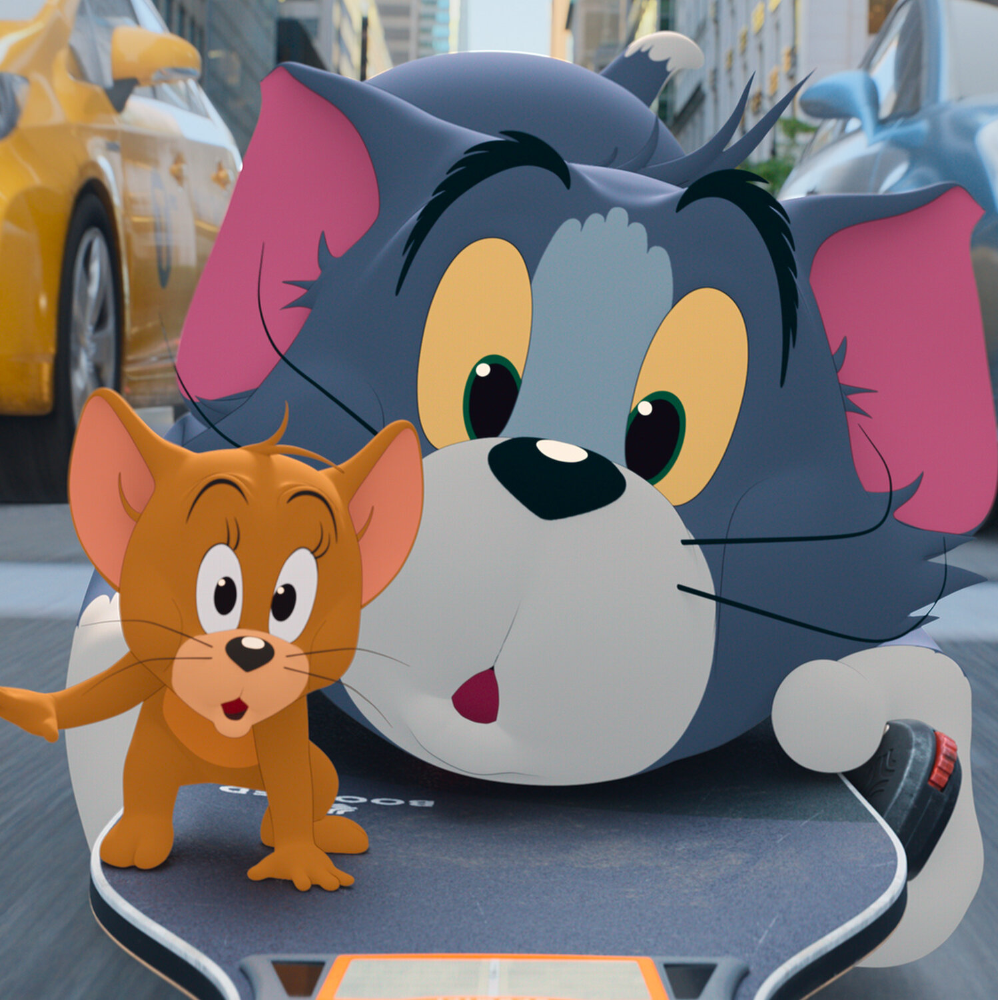

Ravella Sowjanya Productions LTD
THESPIS
ACTII
[Chorus heard, at first below, then enter Daphne, Pretteia,
Preposteros, Stupidas, Tipseion, Cymon, and other members of
Thespis's company climbing over rocks at back. All carry small
baskets.]
CHO.
Of all symposia
The best by half
Upon Olympus, here await us.
We eat ambrosia.
And nectar quaff,
It cheers but don't inebriate us.
We know the fallacies,
Of human food
So please to pass Olympian rosy,
We built up palaces,
Where ruins stood,
And find them much more snug and cosy.
SILL.
To work and think, my dear,
Up here would be,
The height of conscientious folly.
So eat and drink, my dear,
I like to see,
Young people gay—young people jolly.
Olympian food my love,
I'll lay long odds,
Will please your lips—those rosy portals,
What is the good, my love
Of being gods,
If we must work like common mortals?
CHO.
Of all symposia...etc.
[Exeunt all but Nicemis, who is dressed as Diana and Pretteia,
who is dressed as Venus. They take Sillimon's arm and bring him
down]
SILL.
Bless their little hearts, I can refuse them nothing. As
the Olympian stage-manager I ought to be strict with them and
make them do their duty, but i can't. Bless their little hearts,
when I see the pretty little craft come sailing up to me with a
wheedling smile on their pretty little figure-heads, I can't turn
my back on 'em. I'm all bow, though I'm sure I try to be stern.
PRET.
You certainly are a dear old thing.
[with dance] Climbing over rocky mountain
Skipping rivulet and fountain,
Passing where the willows quiver
By the ever rolling river,
Swollen with the summer rain.
Threading long and leafy mazes,
Dotted with unnumbered daisies,
Scaling rough and rugged passes,
Climb the hearty lads and lasses,
Til the mountain-top they gain.
FIRST VOICE.
Fill the cup and tread the measure
Make the most of fleeting leisure.
Hail it as a true ally
Though it perish bye and bye.
SECOND VOICE.
Every moment brings a treasure
Of its own especial pleasure,
Though the moments quickly die,
Greet them gaily as they fly.
THIRD VOICE.
Far away from grief and care,
High up in the mountain air,
Let us live and reign alone,
In a world that's all our own.
FOURTH VOICE.
Here enthroned in the sky,
Far away from mortal eye,
We'll be gods and make decrees,
Those may honor them who please.
CHO.
Fill the cup and tread the measure...etc.
PREP.
[very gloomily] Give him a picnic, somebody.
THES.
Be quiet, Preposteros. Don't interrupt.
PREP.
Ha. Ha. Shut up again. But no matter.
| Characters |
Singers |
Money Offered |
| Desperd |
Rich |
5 million |
| margaret |
Rob |
10 million |
| Baronets |
Rose |
15 million |
link to opera2 file
